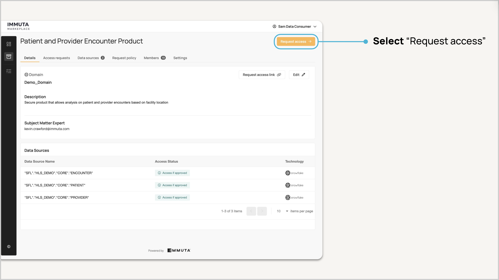
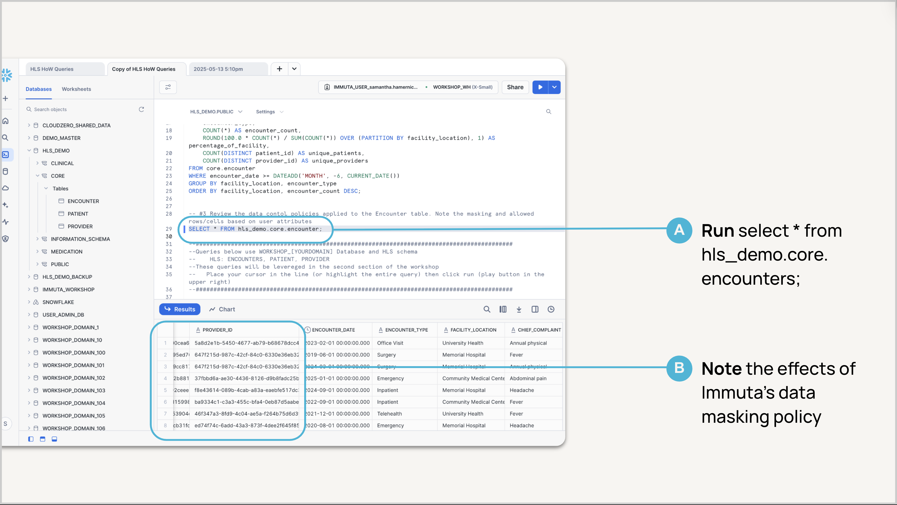
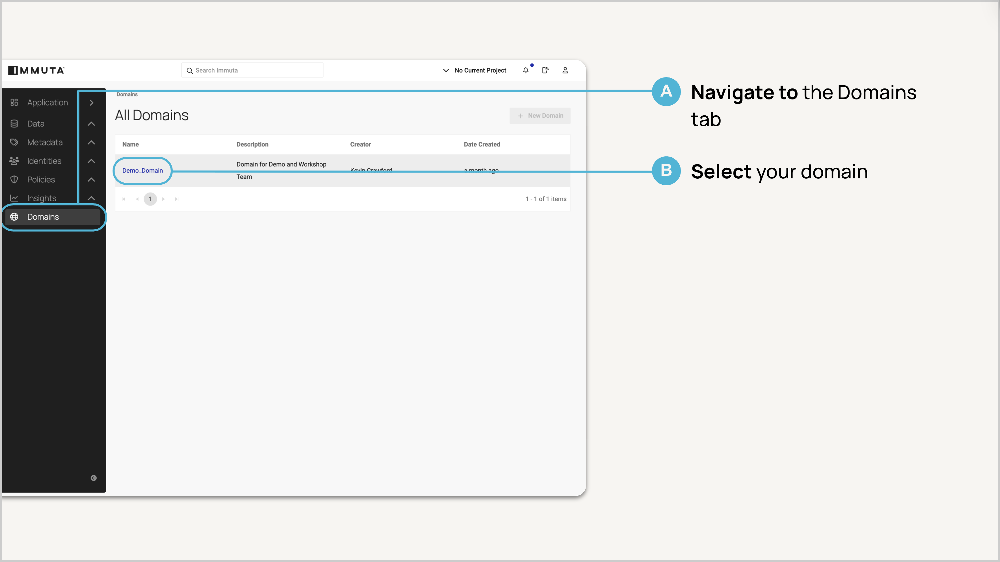
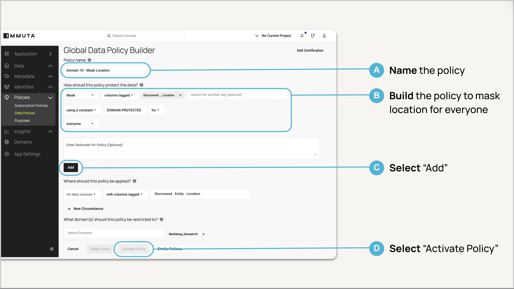
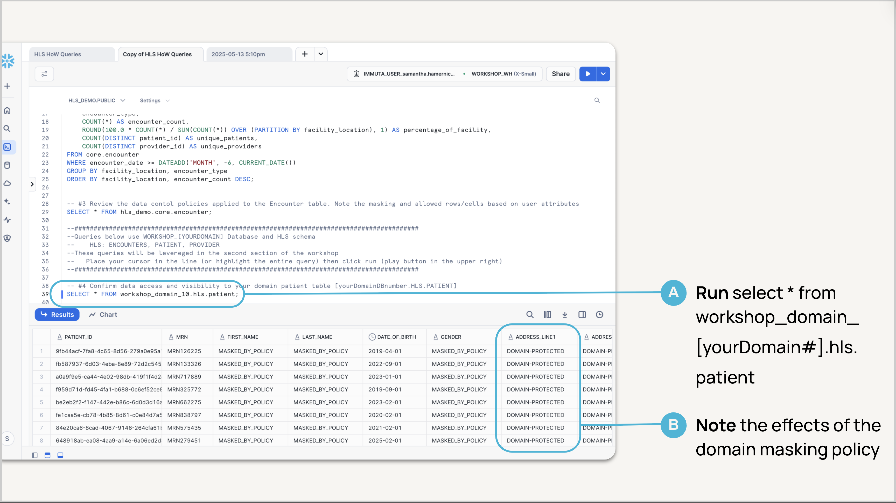

In this guide, you'll learn how to securely provision data access using Immuta and Snowflake by stepping into the roles of a Data Consumer, Data Product Owner, and Data Governor.
The scenario centers on a healthcare dataset containing patient and provider encounters across a network of facilities. You'll use an HLS dataset to simulate a federated enterprise environment and experience how Immuta helps organizations streamline access while maintaining compliance and accelerating time to data.
By the end of the guide, you'll have published a secure data product, enforced dynamic policies, and accessed governed data.
Introduction to Immuta
AI and other technologies have created a surge in data demand, with 10–100x more consumers needing access. While data is now easier for non-technical users to reach, the governance processes haven't scaled. As a result, IT and data teams are overwhelmed, and users are frustrated by delays. 
Despite the push to make data more accessible, most organizations still rely on a complex, manual process involving multiple teams. From request to access, it often takes over two months—slowing down insights and frustrating users. This model no longer scales with modern data demands. 
Immuta simplifies and secures the data access process with a single platform that combines a governed data marketplace with automated policy enforcement. Data consumers get fast, compliant access, while stewards, governors, and product owners work within clear, auditable workflows 
Prerequisites
- None; all access and accounts will be provided as part of the workshop setup
What You'll Learn
- How Immuta's native integration with Snowflake enables secure, scalable data access
- How to automatically identify and tag your data so you can classify sensitive information and apply scalable policies that support compliance
- How to build dynamic, attribute-based access controls so access adapts automatically
- How to publish trusted, compliant data products to the Immuta Marketplace so users can discover and request the data they need without creating bottlenecks
What You'll Need
- Access to Immuta's Workshop Okta SSO (provided)
- Access to the shared Snowflake worksheet (provided)
What You'll Build
- A plain-language masking policy in Immuta that protects PII using Snowflake's native controls
- A governed data product published to the Immuta Marketplace, available for access by other workshop participants

Overview
You've been provisioned with an Okta profile that will allow you to seamlessly sign in to the following environments for the workshop:
- Immuta Governance
- Immuta Marketplace
- Snowflake Workshop Account
In Snowflake, you're provisioned as a data owner over a single schema within a domain-scoped database. Throughout this workshop, you'll create fine-grained access controls to govern this data and publish a secure data product that others can request through the Immuta Marketplace.
Note: Be sure to use the shared Snowflake worksheet provided for the hands-on exercises.
What you'll do
- Sign in to Okta
- Launch each application:
- Immuta Governance
- Immuta Marketplace
- Snowflake Workshop Account
- Review the data currently available to your user
Follow Along in Okta


Follow Along in Snowflake


Overview

What you'll do
- You are Connie the consumer who is an analyst that has been tasked to review and provide insights on facility performance based on patient encounters.
- You need to find a data product that will fit your analytical needs and get access quickly to provide insights within a short deadline.
- We'll start by looking at the Immuta Data Marketplace to see what data products are available that may fit your business needs.
Follow Along in Immuta Marketplace: Request Access to a Data Product



Follow Along in Snowflake


Overview
Domains in Immuta enable decentralized, federated governance by giving business units control over their own policies while still enforcing organization-wide rules through a global policy layer. Each domain contains its own data sources, governance rules, and designated stewards who manage access and ensure compliance. In this lab, you'll operate as a domain steward, managing access and policies within your domain, while global compliance is enforced through shared metadata across the platform, ensuring consistency in a distributed model.

Subscription policies determine who can see a dataset, while data policies govern how sensitive information is masked or filtered based on context, ensuring secure, compliant access. Immuta policies offer fine-grained control over data access at every level: table, column, row, and even individual cells.

What you'll do
- You are Greg the Domain Governor who is responsible for ensuring that all the data within his domain is secured based on global compliance standards and inter domain requirements.
- You need to build a policy that will include global masking requirements based on data metadata (tags) that are being automatically applied by Immuta. This masking policy must also include a domain requirement to mask ‘location' data.
- We'll start by looking at the Patient table within the Immuta Governance application so we can confirm automated data discovery tags were applied.
- Then you'll create a domain specific data policy within the Immuta Governance application using the metadata tags available to secure location information.
Follow Along in Immuta Governance: Review Metadata



Follow Along in Immuta Governance: Create a Data Policy

Follow Along in Snowflake

Overview

What you'll do
- You are Pratyoosh the Domain Data Product Owner who wants to publish secure products that drive business value. Pratyoosh wants to understand who and how often these data products are being used.
- You need to publish a data product to the Marketplace so that consumers can gain access immediately. This product must include Greg's data policies prior to being made available in the marketplace.
- Let's start by defining the data product in the product owner interface and create the access workflow for consumption.
Follow Along in Immuta Marketplace: Publish a Data Product


In this lab, you stepped into the roles of Data Governor, Data Product Owner, and Data Consumer to experience how Immuta and Snowflake work together to simplify and scale secure data access. You discovered how metadata-driven policies, automated workflows, and the Immuta Marketplace reduce friction, accelerate time-to-data, and support compliance without sacrificing control.
What You Learned
- How Immuta's native integration with Snowflake enables secure, scalable data access
- How to automatically identify and tag data to classify sensitive information and apply scalable policies that support compliance
- How to build dynamic, attribute-based access controls that adapt automatically to users and context
- How to publish trusted, compliant data products to the Immuta Marketplace, enabling users to discover and request data without bottlenecks